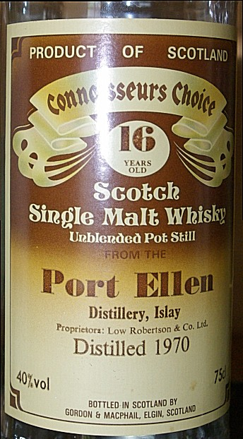
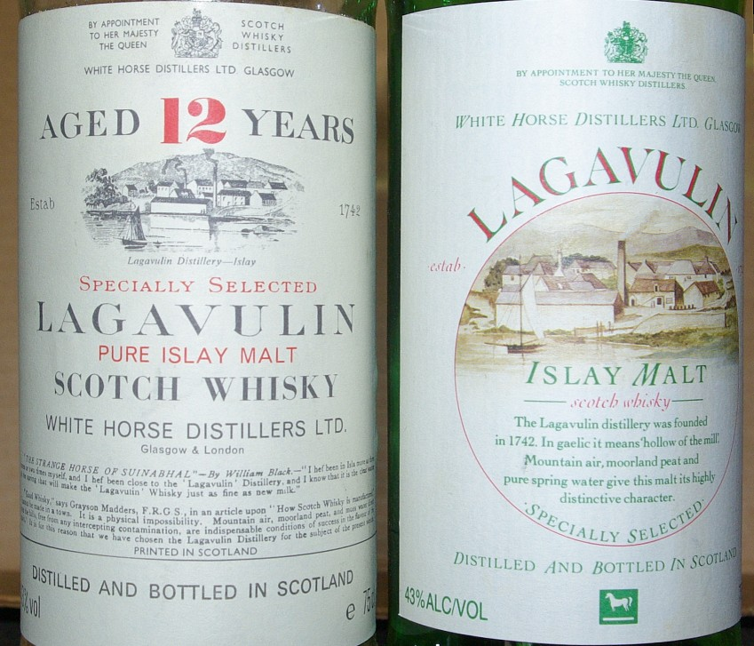

Messages on 2nd generation 1990s MALTS-L relevant to the quest for semi-mythical A&N MOHM Glen Grant 14 extracted from 3d generation (2007-2016) MM-MALTS-L Karlsruhe/GRSNET archive. See 2007 MM message on the rescue of MALTS-L and a 2008 look back at MALTS-L from MM. (1st Gen 1970s-1980s was likely hosted at BBN and may be lost?)
Emphasis, linkage, and marginalia supplied by the Editor, naturally, as these were on a pure-text email list!
Prior chapter of the quest — Up to Malt home — Continue the saga
© 2011, 2021 Literary Estate of M.A.Padlipsky & William D. Ricker.
map at DESKTALK.COM [ MAP is replying to a What three readily available bottles would you want while stranded on a desert island thread ... ]
While I do think it's a good game, I'm finding it very hard to play because I discovered that I actually have a third bottle of the "real" 12 y.o. Lagavulin Mike preferred the earlier white-packaging Lag 12 to the 1990s new Lag 12. in the hoard after all, so I know what I'd WANT to bring. (For that matter, if I hadn't found the third I'dve been inclined to say I'd want the two I knew of and a magnum of Maalox.) But since they're not on the market any more and presumably nobody else could get them for their islands it doesn't seem fair to nominate them, any more than it makes any sense to wish for the even longer-gone, but still more fondly remembered Glen Grant "Magnificent Old Highland Malt".
Also, having slightly misremembered the orignal framing of the questions, I assumed the "readily available" constraint meant I couldn't opt for an Adelphi Ardbeg, an Adelphi Springbank A Tasting for Mike, q.v. #TBD, and a who knows/cares for the third if the Lagvulin were out on the grounds that there seemed to be a faint implication the choices should at least in principle be available to others, though since I started drafting this I do see that Brother Yen managed to save and was good enough to reproduce the originals, which don't seem to limit the first round of choices after all -- and he happens to favor the Ardbeg too, I note with no real surprise -- so I guess I could go with those two for part one. And I wonder if the costs mightn't rule out a third anyway, especially since I'm having trouble thinking of a third in their league.... (Come to think of it, though, a good third would be the SMWS 39.7 if it were still available, or if the experiment had been successfully repeated since; it was a Linkwood that had been aged 12 years in a fino cask and two years in an oloroso cask, and when I mistakenly opened my hoarded bottle of it the other month, thinking it was the already open SMWS Ardbeg [if anybody can suggest why in the world I would have wrapped masking tape around the cap of an unopened bottle, don't bore the List/Group and/or embarrass me in "public" but do please tell me off-List], I realized it was even better than I'd remembered it and indeed, to my tastes, of course, rather extraordinary.)
It was, however, the three readily available ones ones that gave me the most trouble. After a certain amount of soul-searching I suppose I'd go for an 18 y.o. MacallanA Tasting for Mike, q.v. #TBD because it comes closest to the MOHM, and the G&M Port Ellen because it comes closest to The Lagavulin. I take the spirit of the game [NPI] to come close to ruling out two of one and one of the other (and I have a hard time deciding which I'd double up on anyway), though, so that leaves me with one more choice to make but it's not an easy one: A sense of "variety" militates for either the 15 y.o. Glenfarclas that the "man on the street" 2nd section of next chapter would want on the one hand or perhaps the 21 y.o. Springbank that fooled me in the blind tasting in August on the other, but neither really seems to be quite the right choice: they strike me as ah's, but not ooh's, if that communicates. Deciding the gastroenterologist would tell me even two is/are too many is a copout. Going for the '65 Mac and the '70 MacA Tasting for Mike, q.v. #TBD as counting as different is a quibble, even though there is an unopened '65 in the hoard as well as a couple or four of the '70s. (There are a couple of the Port Ellens, too, but if I were to double up I'd go with the Mac because it seems to me to come closer to its extinct nonpareil parallel than the P.E. does to its.) So.... I dunno. How about a Glenfiddich, to help me appreciate the other two the more, and in hono[u]r of its having been the one that got me "into" the "single malts" in the first place?
Since this has gone on long enough even for my tastes, I do feel justified in not agonizing further and having a go at the cost- limited question -- though I say that more for my own relief than anybody else's, of course.... (And I'll also forego musing on the fact that I seem to have more of a weakness for caskstrengths than I'd realized, per the revised part one choices, but wouldn't want to deny Felix the satisfaction of seeing me at least take note of it in "public".)
equivocating cheers, map
map at DESKTALK.COM
In-Reply-To: Felix Yen's message of Tue, 7 Nov 1995 12:53:20 -0500
> [...] Although one might claim that these collections merely represent personal choices, choices that were sometimes made almost by accident (e.g. in cases where only one bottling was available), I claim that these bottles tacitly represent whisky in general and that each bottle represents its distillery. What other reason is there for viewing variety as a desirable trait for a collection? <
Always answer rhetorical questions, I almost always say. Especially when the answers are instructive.
There are, I'd suggest, several other reasons than representation for "variety". Least creditably, probably, but most common, perhaps, is "Just showin' off." None of us, presumably, but there are certainly some in the world who acquire for the sake of acquisition -- or even acquisitiveness. (Well, perhaps even less creditable is the position that whisky tastes better than etchings: Have some 'morangie, m'dear....)
More creditably, there's the evangelism of the enthusiast. That is, as with other fields people get "hipped" on, converting others can be a powerful motivation for having a lot of examples to offer: If you don't like that one, try this one; we'll surely find some you'll really like out of all these choices, and get you to join me in The Cause. After all, a pleasure shared might not be a pleasure doubled, really, any more than a sorrow (or it is a trouble?) shared is really halved, but the pleasure is amplified somewhat, just as, if you're lucky, the sorrow can be attenuated somewhat.
And then, whether creditable, or even credible, or not, there's what happened to me. My own "research";, as I don't think I ever mentioned explicitly to the List/Group, didn't really become serious until I had some of the Glen Grant "Magnificent Old Highland Malt". Up until then, I'd had maybe half a dozen different malt whiskies, and had three or four (well, maybe five or six) bottles around. Since it was the early to mid-'70s, it might be argued that even if I'd tried I couldn't have amassed more than a dozen or so in this country, but regardless of that I didn't feel the need to.
The MOHM, though, so transcended anything alcoholic I'd ever tasted that when I eventually discovered (and by then it was the early '80s) that there would never be any more I decided that I'd launch an effort to find the world's second best Scotch, dubbed it my real field of research interest, and started ... researching. Actually, even in the later '70s I had been titillated enough by the hope of finding something comparable to the MOHM to try several of the ones that were becoming more and more available (in a few specialist shops, in full bottles; if there were any bars around that had more than the Usual Three, I wasn't aware of them), and I tended not to finish them because at the time I was blissfully unaware that they'd deteriorate and was enough of an evangelist already that having more than a dozen seemed reasonable when introducing friends to the field; but it wasn't until I got to the Army&Navy Stores and learned the MOHM had been a private filling and that they no longer did private fillings, and that Glen Grant no longer sold the distillate for private fillings from the London Glen Grant office, that a dozen or so became two or three dozen.
It helped somewhat when I discovered the Cairngorm Whisky Centre Cairngorm Whisky Centre & Museum, in "downtown" Aviemore, in the middle of the Cairngornms National Park, headwaters of the River Spey. Alas long since closed. In the Research Notes, MAP refers to CWC&M as the Central Research Facility, and his Source notation C1 C2 C3 denote samples sampled at their Museum Tasting Bar on 1st, 2d, 3d trips there. and was able to rule out large numbers of candidates all at once, but it was also the case that I came across a fair number that, while not the world's second best, still tasted good enough that I felt like having them around. And for a while, it did seem tempting to take a "completist" position and try to have a bottle of every available one, but I did abandon that goal even before I belatedly learned that they did deteriorate when open and sitting around for years. So add another dozen or two; researchers are expected to have Reference Collections, aren't they.... (But the "collector" phenomenon does, indeed, stand as still another reason for variety, and not, I think, an altogether discreditable one. There's also variety for the sake of variety. There's even, in my own personal case, fondness for bargains and Trader Joe's former buyer who found a number of attractive-seeming "buys" right about the time I reluctantly returned to Lotosland.)
"Still tasted good enough that I felt like having them around" is significant, I submit. For in addition to the consideration that sometimes you're in the mood for one, sometimes for another, which may be construed as still another "reason", it's also the case that if the motivation is -- I don't really blush to admit it -- at base a hedonistic one, If it tastes good, buy it can be sufficient justification (to a gainfully employed bachelor in the '80s who had no other hobbies, anyway). So I at least differ from, if not exactly take issue with, since you're of course entitled to hold the view, your position that
> Meanwhile, I try to understand whisky by exploring the variety offered by individual distilleries. <
because I don't try to understand it, I try to enjoy it.
(Other things, such as G.I. Woe and a policy against getting into the habit of drinking alone, being equal, of course).
NOT meant as a cheap shot or a one-upping, b/t/w, just a tidyish exit line (though loose ends are acknowledged, esp. w/r/t the pleasures of understanding and the desirability of finding predictors that might even lead to a new "world's best") since this has, as usual, gone on rather long. But there ARE a number of reasons why one might wind up having a lot of examples of malt whisky around, as I expect you knew when you asked the rhetorical question, and that's the one I'll choose to close with....
cheers, map
map at DESKTALK.COMIn-Reply-To: Michael Byrne's message of Thu, 22 Aug 1996 10:47:54 -0400
I must confess to being somewhat puzzled by the apparent inconsistencies between what I've seen in what passes for real life with me and what you've described, but perhaps there's a link in the chain that hasn't quite come through yet which, if it's in fact there, would reconcile the phenomena.
Which is to say that in my visits to ... "an independent bottler" is probably the appropriate way to avoid packdrill, Pack-drill was a punishment given to soldiers in the British Army, requiring them to undertake drill (exercise) in full uniform and carrying a heavy pack. I've seen a number of, what, 12 or 16 oz. bottles labelled with as I recall handwritten distillery names, cask numbers, ages, and proofs, filling in lines on printed and/or stamped forms that I'd ... unthinkingly thought came from the distilleries themselves, if I can put it that way. But if the distilleries don't sell single casks, and I've no reason to dispute you on that statement, then my unexamined assumption as to the sample bottles' provenance is clearly wrong. (Or at least the assumption that they came DIRECTLY from the distilleries themselves is clearly wrong.) So I'm wondering if there is a whole stratum we haven't explicitly heard about of what might or might not be called "whisky factors" who serve as middlemen [technical term, immune from P.C. censure] between the distilleries and the independent bottlers. Can you -- or anybody else in the trade or who's read up on it somewhere authoritative more recently than I (or whose memory's better than mine regardless of when the reading was, of course) -- cast any light on that? For that matter, were you trying to say that and I just didn't read your msg aright, since I did go into a somewhat spinning headstate trying to follow that poor little cask in the first part?
(I imagine that if there are such things as factors and if any are "lurking" on the List/Group we'll never ever hear from any of them "uncloaked" since they'd presumably not want to be driven mad by scores of requests for deals. I would, however, be more than glad to protect their anonymity if any were let me e-know they were there, and might even be foolish enough to offer to play coefficient to their prime factors, or something.)
There is one ray of light I might be able to throw on the situation from a different angle, b/t/w: I think I have it on good authority that there is, or at least was, a technical term called the "private filling". It might well be that Seagram stopped doing them before Brother Byrne's time with them, but it was indeed in the context of Seagram that I first heard of them. This was when I was trying to track down the Glen Grant "Magnificent Old Highland Malt" in London in what I believe to have been the Fall of 1982, and I was told by the then-Wine and Spirits Manager (or Assistant Manager; I really do forget, and am not merely trying to preserve anonymity though on second thought I should be anyway) at the Army & Navy Stores that the MOHM had been a private filling but their new owner, the House of Fraser [Extremely] Limited, had decreed that Harrod's was the chain's prestige wine and spirits outlet and had banned A & N from doing further private fillings. (I was also told that no, there wasn't any MOHM cached away somewhere because "the Directors drank it all," so apparently They weren't complete fools, although that might have been the previous Directors for all I know.) I then marched over to Glen Grant's London office and learned that it was even worse than that because they'd since been acquired by Seagram [unless memory serves a fault and it was, you should pardon the expression, Schenley; no, not unless Charlie's book's serving a fault too; let's assume that Seagram it is] Of course Mike and Charlie were correct - Seagrams whisk(e)y division was indeed parent co of Glen Grant c. 1978-2006, as part of Pernod Ricard 2000-2006; and in Gruppo Campri since then. and were no longer even permited to sell distillate for private fillings since They could make all the money They wanted selling it at 5 years old in Italy. Back when Italy was the best market for Single Malt Scotch, Glen Grant was the best seller there - young, pale, not the dark sherry-monster beloved by Mike and me. So rightly or wrongly I've always believed there were such things as "private fillings," which inherently I'd imagine must be done via direct dealings with the distilleries unless we want to flout Occam's Razor and postulate still another middle-entity (or still another role for the still- hypothetical "factors"?), and either everybody I've spoken to in the trade since was too polite to call me on using the term in conversation with them (and that's not a facetious suggestion, since I've been uniformly impressed by the gentlepersonliness of everybody I've happened across in the trade), or it actually is a "term of art" or whatever the current buzzphrase is.
So in addition to more detail on who conveys the eggs from the chicken to grocer perhaps Brother Byrne, who did touch on own-casks but I thought it was only in the corporate context -- or again other siblings-in-spirit with certain knowledge of the trade -- would be willing to fill in the gaps on the "private filling" topic -- unless, of course, it's a trade secret I wasn't supposed to be privy to in the first place....
cheers, map
P.S. Since it's been awhile since I've done so on-List, the customary afterthought this time certainly should be a reminder that if anybody ever turns up any of the Army & Navy Store's Glen Grant MOHM, perhaps at an estate sale or the like, PLEASE let me know. This would be what literary analysis would term foreshadowing. (The "original" 12 y.o. Lagavulin in the white packaging, too, of course.) (And I must add that in light of still another report that They've mucked up the 16 y.o. I do hope that if anybody comes up with something ... retributional to do with or to UD United Distillers, now known as Diageo Scotland, parent co of Lagavulin and the other Classic Malts brands. Still quite good if not as lovely as 1980s Whisky Loch era - which is why we Dustie Hunt. I'll be given the pleasure of hearing about it, anonymously at least. Ah. A thought: since I do believe that UD belong to Guinness, the least I can do is to assure everybody that in my own humble but dogmatic opinion Murphy's is a MUCH better stout and hope they'll take that to heart when and if dabbling in undistilled malted barley products.)
Prior chapter of the quest — Up to Malt home — Continue the saga